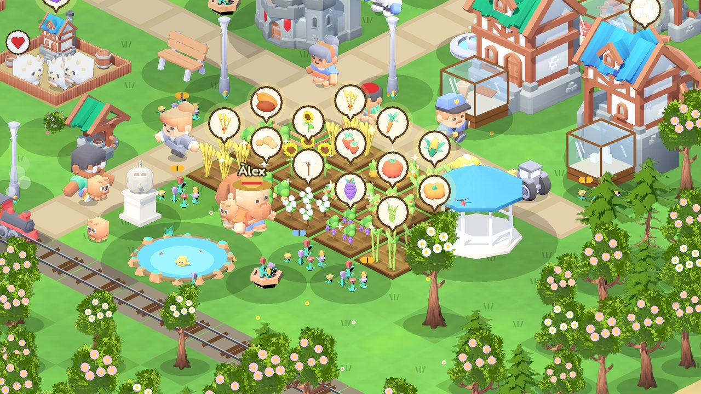
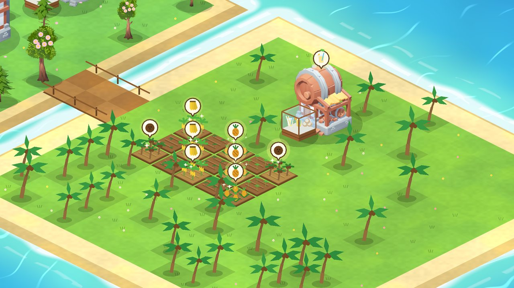
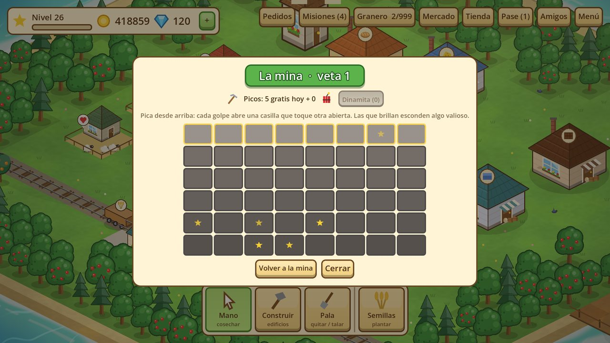
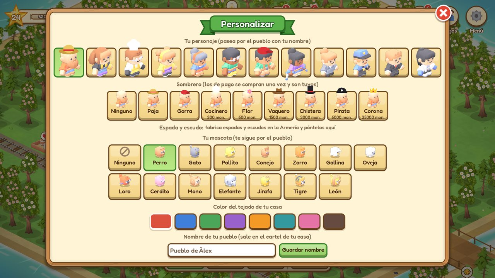
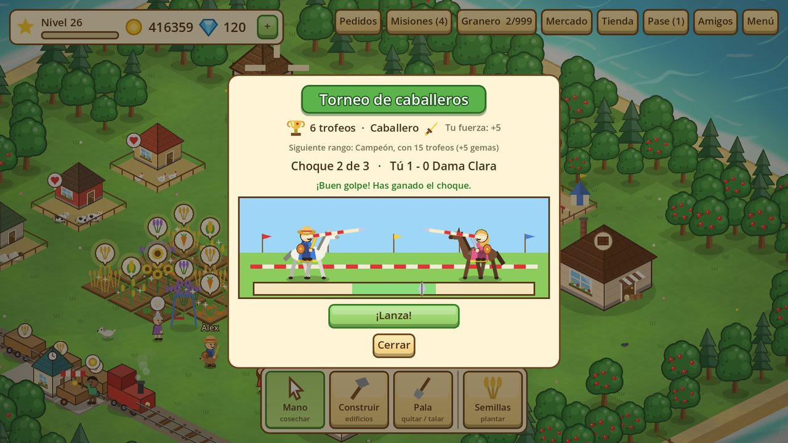
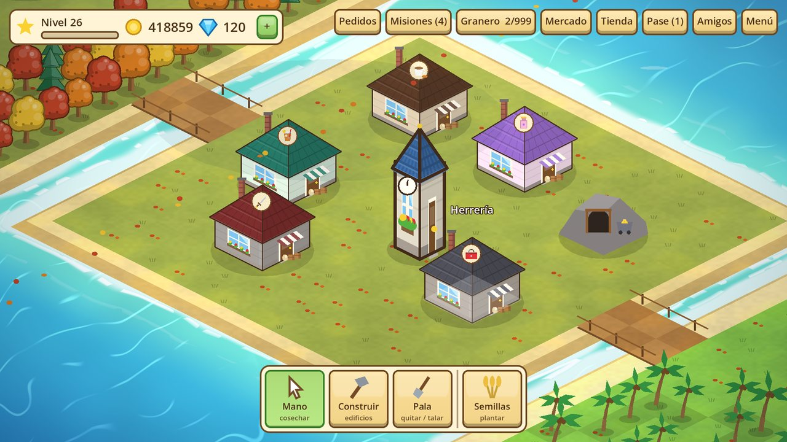
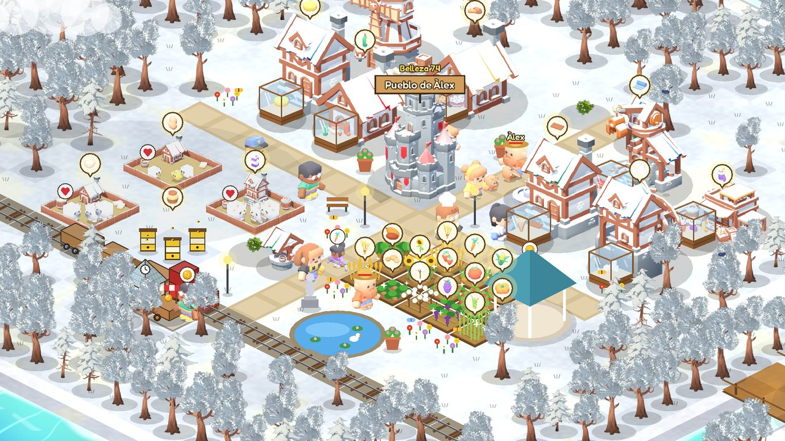
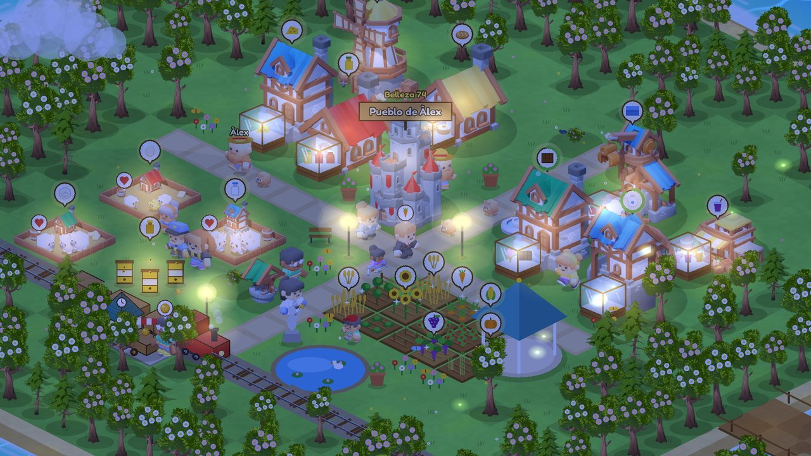

Planta y cosecha
Veintiún cultivos, del trigo a la vainilla, y árboles frutales. Crecen de verdad con el tiempo, también cuando no juegas, y brillan cuando están listos.

Tu pueblo, tu granja, tus amigos

Un juego de granja y pueblo tranquilo y para todas las edades: construye y decora a tu gusto, con mar animado, cuatro estaciones y día y noche. Todo está dibujado para este juego.

Veintiún cultivos, del trigo a la vainilla, y árboles frutales. Crecen de verdad con el tiempo, también cuando no juegas, y brillan cuando están listos.

Panadería, quesería, telar, chocolatería, juguetería… Más de veinte fábricas, cada una con su máquina, que convierten lo que cosechas en productos.

Pedidos de los vecinos, un tren y un barco que llenar de mercancía, el mercadillo y pedidos relámpago que pagan el doble.

Construye puentes para abrir una segunda isla y una isla tropical con palmeras, plátanos, cocos y su propio bar.

Pica la roca casilla a casilla y encuentra hierro, plata, oro, rubíes y cofres. Con ellos haces espadas y escudos; con tintes, peluches y juguetes.

Elige sombrero, color de ropa, espada, escudo y mascota. Tu granjero pasea por el pueblo y tus amigos lo ven al visitarte.

Construye el campo del torneo y compite en la justa a caballo y el tiro con arco. Tu espada y tu escudo te dan fuerza. Si pierdes, no pierdes nada.

Misiones cada día, logros, una ruleta gratis, una historia con capítulos, pesca en el muelle, un álbum para completar y un evento semanal.

Visita sus pueblos, mándales regalos y montad una cooperativa. Invítalos con el nombre de tu pueblo y os lleváis gemas de regalo.


Descargar para AndroidAPK · 56 MB · gratis